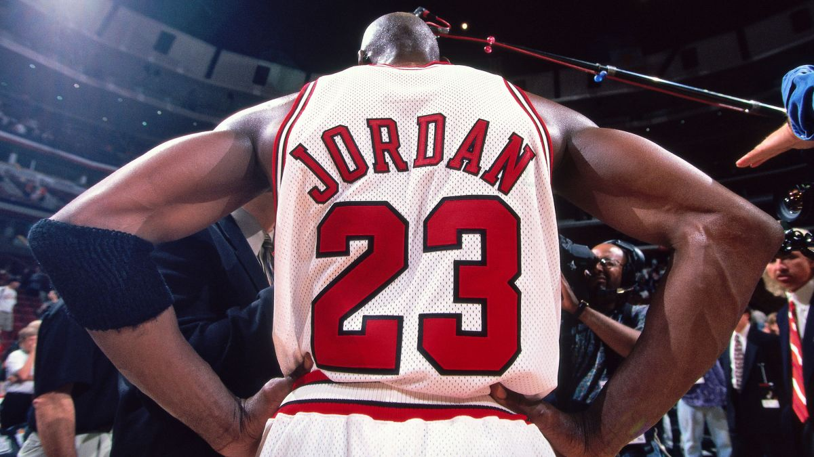

Michael Jeffrey Jordan

-
Six NBA Championships: Won six titles with the Chicago Bulls, never
losing in the Finals.

-
Five MVP Awards: Recognized as the league’s Most Valuable Player five
times, highlighting his dominance.
-
Scoring Titles: Won 10 scoring titles, showing his consistent ability
to lead the league in points.
-
Two Three-Peats: Led the Bulls to two sets of three consecutive
championships, a rare achievement.
-
Defensive Excellence: Won the Defensive Player of the Year award and
made nine All-Defensive First Teams.
-
Clutch Performances: Known for game-winning shots, particularly in the
playoffs and NBA Finals.
-
Perfect Finals Record: A flawless 6-0 record in the NBA Finals, with
six Finals MVP awards
-
Global Icon: Elevated basketball’s popularity worldwide, becoming a
global sports icon.
-
Cultural Impact: His influence extends beyond the court, shaping the
sports culture, fashion, and branding.
-
Legacy: Set the standard for greatness in basketball, inspiring future
generations of players.